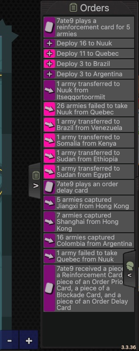
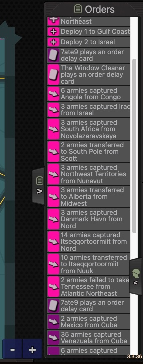
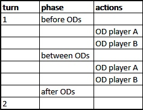

Turn Phases
In reference to Wikipedia on Turn phases, understanding this is vital to a lot of tricks as well as strategy in general. There are distinct phases where each action takes place, with those being the below. These turn phases are absolute, they are applied 24/7, unless there is a Mod in the game bypassing a mechanic. The list is taken from the Wikipedia, but isn't entirely correct with some details like the diplomacy card wearing off after receiving new cards.
-
- Active Cards wear off
- Discards
-
- Order Priority Cards
- Spy-like Cards
- Reinforcement Cards
- Deploy / Purchase
-
- Bomb Cards
- Emergency Blockade
- Airlift Cards
- Gift Cards
- Attacks/Transfers and Order Delay Cards
- Blockade
- Sanction Cards
- Receive new cards
The move order isn't applied in all of the Turn Phases, albeit it is in some:
- Active Cards wear off
- Discards
- Order Priority Cards
- Spy-like Cards
- Reinforcement Cards: They are executed in the same order as the turn. For example, Turn 9.
- Deploy / Purchase: They are executed in the same order as the turn.
- Bomb Cards: clueless
- Emergency Blockade: They are executed in the same order as the turn. For example, turns 15, 19, 44.
- Airlift Cards: clueless and haven't bothered to check.
- Gift Cards: They are executed in the same order as the turn. For Example.
- Attacks/Transfers and Order Delay Cards
- Blockade: They are executed in the same order as the turn. For Example, Turn 20.
- Sanction Cards: They are executed in the same order as the turn. For Example, Turn 5.
- Receive new cards: One of the players is selected (no idea as to the rule) and that player is always first in that list. For example. Therefore, this cannot be used to either derive the move order, or gain any advantage.
There are a handful of small things one can note of, but most of them are extremely case-specific. As an example, in Georgia Army Cap and Landria the players have an abundance of Blockades. It's always recommended to first blockade territories bordering your opponent so as to avoid passing information on how many territories you blockaded or how many cards you used.
Order Delay and Phases
So the first mention of this that I found dates back to 2016. But before we jump deep into this, let's first understand the way OD functions with this Game, and Turns 10, 17 shown below.


Playing an OD card effectively creates a new phase for orders to execute in. Playing a set of OD cards at the same time, or more, pushes moves to a second, or latter phase, respectively. But you can queue moves between each OD phase. The arising question is what happens with the move order, as in the above 2016 forum, quoting this game, turn 7 doesn't seem to make any sense. Fizzer's response to it was:
- Consider all players with unprocessed orders. Is the top order for everyone an OD?
- If so, process one OD from everyone.
- Process top order from each player whose top order is not an order delay card.
- Reverse the move order
- If there are still unprocessed orders, go to 1
So to explain it further, in that game on Turn 7, first move belongs to Sultan. After deployments, the above algorithm is implemented:
- 1. Is skipped since not both players have OD first
- 2. Njord's first move is played
- 3. Move order is reversed, meaning next move will belong to njord, followed by 2x from sultan, etc.
- 4. If there were unprocessed orders this algorithm repeats. Here there aren't. The set of ODs is played.
Practically speaking, this algorithm implies that moves in this game are coded as AB pairs and not ABBA pairs, with the order flipped after each pair. If A has a move while B doesn't then the order will still be flipped if the turn has more actions later on during an OD. Now I will use the same simple matrix used in Gak's and Solar's trick to define a set of ODs as well as the actions before, in between and after those.

Applying the same algorithm on Turn 19 as well as Turn 19 proves that in the before ODs phase:
- Playing a single move results in the move order always getting flipped. So, here, on Turn 19 Krzysztof has first move, has 1 order in the before OD phase. Move order then is reversed to 1. nickpugs 2. Krzysztof. Set of ODs is played, followed by 1 move from nickpugs, 2 from Krzysztof and so on.
- If there are no moves played, the move order is not flipped Turn 1.
- If there are 2 moves played, the move order is flipped twice, practically speaking going back to the original one, like Turn 19.
- 3 onward you get the memo.
When 2 sets of ODs are played like in Turn 37, the algorithm is still run as above. Specifically:
- 1. Yes the top order from both is an OD -> 1st set of ODs is played
- 2. No order found in this setup to process
- 3. Move order is reversed. Now Crazy has first move.
- 4. There are still unprocessed orders so back to 1.
- 1. The second set of ODs is played.
- 2. Crazy's first move is played. Move Order reversed, no more ODs, proceed into 2x Gak etc
The trick behind these, is that the game treats 0-moves in the same way it treats every other order, as it doesn't know the orders will fail. Therefore, you can use a failed 0-move like in Turn 7 to make sure the cycle after the set of ODs favors you (Rufus playing 2 moves before the set of ODs makes it that the order is not flipped and he has first move after the set of ODs, especially since Rufus plays an OP himself). You can scout for more scenarios in Solar's games 1 and 2.